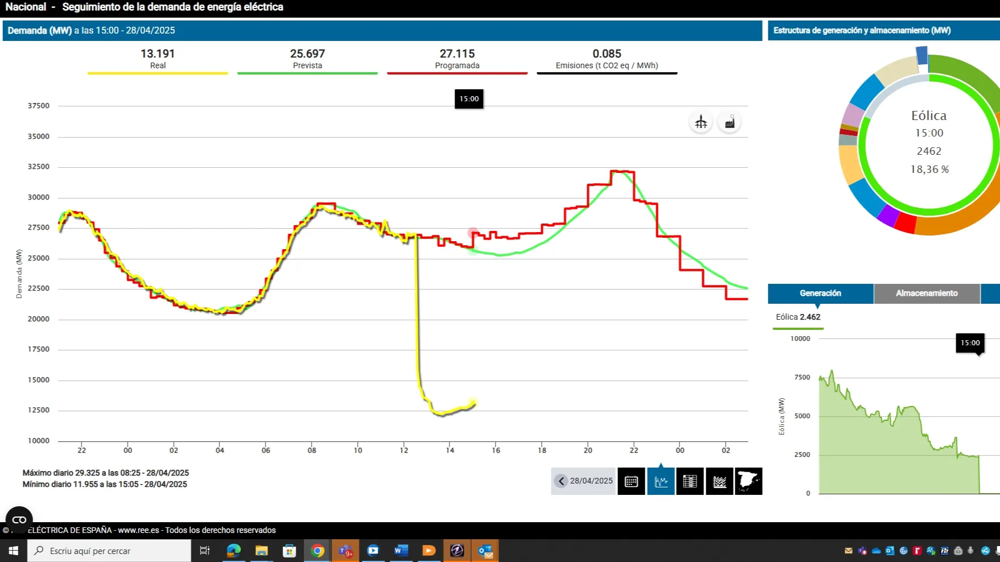

Què és una apagada elèctrica massiva?
Una apagada elèctrica massiva vol dir una apagada gran d'electricitat que afecta moltes zones. Pot passar per diversos motius, com fallades tècniques, problemes meteorològics o desequilibris entre la producció i el consum d'electricitat.
Com es pot llegir un gràfic d'una apagada elèctrica massiva?
En aquest gràfic es mostra l'evolució de la demanda elèctrica durant un dia. Hi ha tres línies importants:
- Línia groga: demanda real (el que realment s'ha consumit)
- Línia verda: demanda prevista (el que s'esperava consumir)
- Línia vermella: producció programada (el que les centrals tenien planificat produir)

Si observes bé el gràfic, veuràs que al migdia hi ha una baixada sobtada de la línia groga. Això pot indicar una apagada parcial o una reducció inesperada de la demanda. És important analitzar aquestes dades amb cura per entendre què ha passat.
Preguntes per pensar:
- Què pot fer que la demanda real baixi de cop? Pot ser una apagada? O una altra causa?
- Per què és important que la producció i el consum estiguin equilibrats?
- Què poden fer els enginyers per evitar apagades?
Com es gestiona l'electricitat?
La xarxa elèctrica és com una gran autopista d'energia. Les centrals elèctriques (solars, eòliques, nuclears, de gas...) generen electricitat i aquesta ha d'arribar a les cases, escoles, fàbriques i hospitals. Però l'electricitat no es pot guardar fàcilment, així que cada segon cal equilibrar el que es produeix amb el que es consumeix.
Una altra cosa molt important és que la xarxa elèctrica europea ha de mantenir-se a una freqüència constant de 50 hertz (Hz). Això vol dir que el corrent elèctric ha de "vibrar" 50 vegades per segon. Si aquesta freqüència puja o baixa massa, la xarxa es pot desestabilitzar i provocar talls.
Hi ha enginyers que controlen la xarxa en temps real i decideixen quines centrals han d'estar en marxa o quines s'han de parar. També es fan servir sistemes automàtics per protegir la xarxa si hi ha problemes.
Per què de vegades es desconnecten les renovables?
Quan es genera més electricitat de la que es consumeix, els tècnics han de reduir la producció. En molts casos, es desconnecten primer les fonts renovables com les plaques solars i els molins de vent.
Això es fa perquè aquestes fonts són les més fàcils de parar de forma ràpida i segura. A més, centrals com les nuclears o les de gas són més difícils d’aturar i són necessàries per mantenir l'estabilitat de la xarxa.
Tot i així, tornar a connectar l’energia renovable a la xarxa pot ser complicat. S’ha de fer de manera molt controlada perquè si s’afegeix massa energia de cop, pot tornar a desequilibrar la xarxa i causar problemes. També cal assegurar-se que la nova energia que entra estigui sincronitzada amb els 50 Hz de la xarxa.
Reflexiona:
Què pot fer que la demanda real baixés de cop el 28 d'abril de 2025? Era un dia assolellat d'entre setmana. Si haguessis de triar entre aquestes dues opcions, quina triaries i per què?
- Que les persones hagin deixat de consumir llum de sobte (baixada del consum)
- Que una part de la xarxa s'hagi apagat o desconnectat (reducció inesperada de la demanda)
Altres preguntes:
- Per què cal mantenir la freqüència a 50 Hz?
- Què hauries de tenir a casa si l'electricitat es recupera al cap de dos dies?
- Quines persones poden tenir més dificultats si hi ha una apagada de llarga durada?
Com es pot evitar una apagada elèctrica massiva?
- Fer servir sistemes per guardar l'energia quan sobra (com bateries o centrals hidroelèctriques reversibles).
- Fer servir xarxes intel·ligents que controlin la producció i el consum en temps real.
- Millorar la cooperació entre països per compartir energia en moments crítics.
Recorda: L’electricitat ha d’estar molt ben gestionada perquè arribi sempre quan la necessitem. Els gràfics com aquest ens ajuden a entendre com funciona la xarxa i com millorar-la!